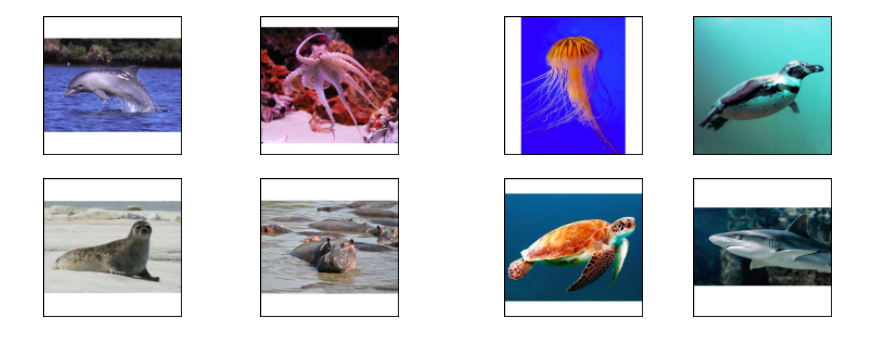

This is the only not-linguistic task of the battery test. It has the purpose to evaluate general cognitive
abilities of the participants. The task is to find the intruder in a set of 4 pictures (e.g. a cow among three
horses).
Two training items and 28 target items compose the task.
Execution time is about 2 minutes.
As an example, we report here one of the training items.
We adapted the odd-one out test for children by shortening it.
Two training items and 20 target items compose the task.
Execution time is about 4 minutes.
The purpose of this task is to evaluate lexical comprehension where the target and the distractors are
phonologically related signs. Participants are required to identify which picture out of six corresponds to the
target sign. The non-target pictures correspond to phonological competitors, namely signs that are
phonologically close to the target sign.
Three training items and 25 target items compose the task.
Execution time is about 10 minutes.
As an example, we report here the training item (the sign is CROISSANT):
We adapted the test with phonological distractors for children who are LSF signers. Participants are required to
identify which picture out of four corresponds to the target sign. The non-target pictures correspond to
phonological competitors, namely signs that are phonologically close to the target sign.
The task for children is composed by one training item and 20 target items.
Execution time is about 05 minutes.
As an example, we report here the training item (the sign is TRAIN):
VIDEO
The purpose of this task is to evaluate lexical comprehension where the target and the distractors are
semantically related signs. Participants are required to identify which picture out of eight corresponds to the
target sign. The non-target pictures correspond to semantic competitors, namely concepts that are semantically
related to the target sign.
Two training items and 18 target items compose the task.
Execution time is about 7 minutes.
As an example, we report here one training item (the sign is DOLPHIN):

We adapted the test with semantic distractors for children who are LSF signers. Participants are required to
identify which picture out of 4 corresponds to the target sign. The non-target pictures correspond to semantic
competitors, namely concepts that are semantically related to the target sign.
The task for children is composed by one training item and 18 target items.
Execution time is about 05 minutes.
As an example, we report here one training item (the sign is FROG):
VIDEO
This is a comprehension and production task that evaluates lexical competence. Participants are required to
watch a sign and produce a sign with the opposite meaning. Target pairs are nouns, verbs, adjectives and
adverbs.
Three training pairs and 25 target pairs compose the task.
Execution time is about 5 minutes.
As an example, we report here one training pair (the given sign is GO-IN and the expected answer GO-OUT):
This task evaluates lexical production. Participants are required to name a number of pictures typically
representing objects. The expected answers are nouns.
Two training and 93 target pictures compose the task.
Execution time is about 10 minutes.
As an example, we show here a training picture and the expected answer (SHEEP):
We adapted the test with semantic distractors for children who are LSF signers. The task for children is
composedby Two training and 20 target pictures.
Execution time is about 08 minutes.
IMMAGINE
This is a sentence-to-picture matching task aiming at assessing the ability to understand content questions
(also called wh-questions). The interrogative pronoun is either the subject or the object.
The pictures represent three characters in a row (first and third alike, second different) with the first
character performing an action on the second, and the second character performing the same action on the third
(as in Friedmann, Belletti & Rizzi 2009). The task is to touch or click on the character who represents the
answer to the question.
Forty target questions and 24 filler questions compose the task. The items are divided in 2 lists (32 items
each) and each list is administered in a different block. For each block there are 3 training items.
Execution time is about 13 minutes.
As an example, we report here one training item:
IX-1 QUESTION. WHO WATER CHILD
IX-1 QUESTION. QUI ARROSE ENFANT
« I have a question. Who waters the child? »
This sentence-to-picture matching task assesses the ability to understand subject and object relative clauses.
Participants are required to watch a video with a request embedding a relative clause (’Choose the dog that is
chasing the cat/’Choose the cat that the dog is chasing’) and need to answer by touching or clicking on the
correct character in a picture.
The pictures represent three characters in a row (first and third alike, second different) with the first
character performing an action on the second, and the second character performing the same action on the third
(as in Friedmann, Belletti & Rizzi 2009).
Forty target requests with a relative clause and 24 filler requests compose the task. The items are divided in 2
lists (32 items each) and each list is administered in a different block. For each block there are 3 training
items.
Execution time is about 15 minutes.
As an example, we report here one training item:
HERE TWO CHILD ONE DAD. HAVE-TO CHOOSE CHILD REL-P PUSH DAD.
LA-LA DEUX ENFANT UN PAPA. FAUT CHOISIR ENFANT PI POUSSE PAPA.
'There are two children and a dad. You have to choose the child who pushes his dad.'
We adapted the test on relative clauses for children who are LSF signers.
The task for children is composed by 3 training item and 12 target items.
Execution time is about 08 minutes.
This is a true or false task assessing the comprehension of agreement verbs, namely verbs whose movement is
spatially modified to mark their arguments (for example, they can involve a path movement from the position in
space associated to the subject to the position in space associated to the object).
Participants watch a non-linguistic video of a situation where three people interact. After the video, a
sentence in LSF is shown which reports either correctly or incorrectly the non-linguistic situation. Incorrect
reports involve a change in verbal agreement (for example, in the non-linguistic video person 1 gives something
to person 2 but the LSF sentence reports the situation as if Person 2 gives something to person 1).
Participants’ task is to decide whether the LSF sentence matches the situation or not.
The task is composed of 21 agreements verbs that occurs in a correct sentence, in two sentences with an
agreement error and in a filler sentence. The total number of items is 68 divided in 2 blocks. Each block is
preceded by 3 training items.
Execution time is about 15 minutes.
As an example, we report here one training item:
(situation in which Person 1 teaches mathematics to Person 2)
Person 1 signing to Person 2 : MATHEMATICS 1TEACH2
MATHÉMATIQUES 1ENSEIGNE2
‘I am teaching you mathematics.’
This is a sentence-to picture matching task evaluating the ability to detect role shift and compute the related
change in interpretation. Role-shift is a strategy to report actions, utterances or thoughts of another person
by adopting the perspective of that person rather than the perspective of the signer (often the signer signals
the change of perspective by moving his/her body towards the position associated with the person whose
perspective is being adopted).
Participants watch a video sentence that can be with or without role-shift. Their task is to decide which
picture out of two represents the sentence. The two pictures are very similar and depict the interpretation with
and without role-shift.
The task is composed of 48 items, 18 with role-shift and 18 without role-shift, plus 12 fillers to assess
whether participants comply with the task requirements.
The task is administered in 2 blocks. For each block, there are 3 training items.
Execution time is about 14 minutes.
As an example, we report here one training item:
YESTERDAY POSS-1 COLLEAGUE BOTH-OF-US DISCUSS 3-SAY-1 [RS STUDENT OHLALA FOOLERY IX-1 EXCLUDE-3 ]
HIER MA COLLÈGUE TOUTES-LES-DEUX DISCUTE 3-DIT-1 [RS ETUDIANT OHLALA BETISE IX-1 EXCLUS-3 ]
‘Yesterday we were discussing with my colleague, she told me ‘Ohlala, my student was acting foolish I excluded
her (from class).’